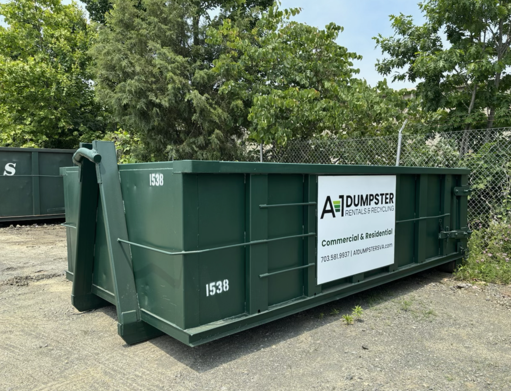

Recycling You Can Prove
Anyone can haul waste. IDS delivers reliable service paired with documented recycling and LEED ready diversion reporting.
Through our partnership with Broad Run Recycling, all materials are processed at a dedicated Construction & Debris recycling facility—every time. We are built for heavy waste and committed to a lighter impact.

Sustainability You Can Stand Behind
At IDS, recycling is mandatory. Every load goes through a documented process backed by real data and industry-recognized standards.
Through our work with Broad Run Recycling, we give you the accountability you need.
From material collection through final diversion reporting, IDS supports your sustainability goals with accountability, so you can stay focused on delivering successful projects.
Real Recycling, Not Assumptions
Every load is documented with facility-verified data, not estimated percentages.
LEED & Sustainability Reporting
Accurate diversion records that meet LEED requirements and pass sustainability audits.
Dedicated Sustainability Rep
Job-specific reporting support to meet your unique project requirements.
Start to Finish Service
Complete jobsite service from material collection through final diversion reporting.
Meet Broad Run Recycling
Materials are processed through a transparent, facility-based system designed to support accurate diversion tracking, sustainability compliance, and defensible reporting.
Why Broad Run
Broad Run Recycling is a dedicated C&D recycling facility serving the DC metro region. The facility is purpose-built to sort, track, and process construction materials with consistency, transparency, and accountability.
Broad Run operates under RCI certified standards and provides the facility-level data needed to support accurate diversion reporting and sustainability documentation.
-
On-site Weighing & Tracking. Real-time material measurement and documentation
-
Dedicated Equipment & Staff. Purpose-built facility with trained professionals
-
RCI Certified Standards. Third-party verified recycling processes
-
Material-Level Data. Detailed diversion reporting by material type
-
Waste Management Plans. Supports construction project compliance
Ready to design a waste and recycling plan built for sustainability and reporting accuracy?
Work with IDS to create a documented recycling strategy that supports your project goals.
Contact IDS to Get StartedWhy Accurate Reporting Matters
In construction, waste and recycling data is not just a formality. It directly impacts project compliance, sustainability goals, and owner confidence.
When diversion data is estimated or inaccurate:
LEED Documentation Issues
Delays or rejections during review that impact project timelines
Last-Minute Scrambling
Rework and data collection late in the project when errors are discovered
Reduced Diversion Rates
Reported percentages that don't reflect actual material recovery
Lost Credibility
Damaged relationships with owners, auditors, and sustainability teams
Missed Targets
Sustainability goals compromised by assumptions instead of verified data
The Real Issue: Process, Not Intent
In many cases, the issue is not intent, but process. Without facility-level tracking, diversion reporting becomes an estimate rather than a defensible record.
IDS approaches recycling with the expectation that data must hold up under review, not just look good on paper.
Common Industry Shortcuts
- Recycling claims based on assumed diversion percentages
- Limited visibility into where material goes after haul-off
- Mixed debris sent to facilities with minimal sorting capability
- Generic reports with little material-level detail
- Recycling treated as a marketing claim rather than an operational process
The IDS Approach
- Facility-verified diversion through Broad Run Recycling
- Transparent material tracking at the facility level
- Project-specific, defensible reporting
- Data that supports LEED and sustainability review
- Recycling treated as an operational process from start to finish
Let's simplify recycling while protecting your sustainability goals.
Work with a partner that treats recycling as an operational process, not a marketing claim.